Where Learning Breathes in Nature's Lap
Set against the verdant slopes of Ratnagiri, O'NEST Gurukul unites traditional open-air learning with modern biophilic architecture. Here, children learn in bright, naturally lit spaces, explore under open skies, and develop strong values in a clean, peaceful environment.
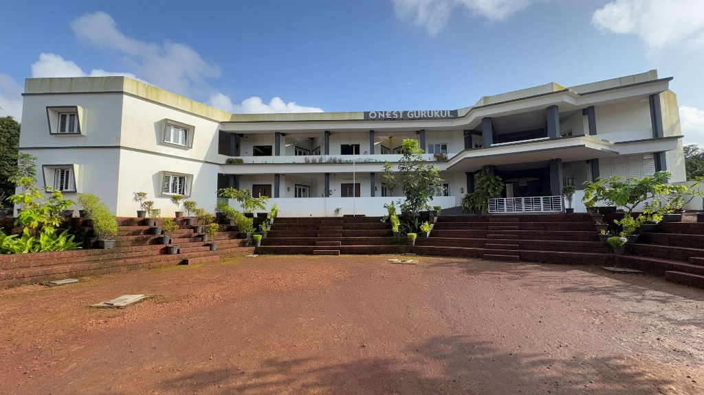
Biophilic Architectural Geometry
Engineered for natural Konkan breeze and North-light daylighting
Explore the Campus in 360°
Walk through our grounds right from your screen. Drag in any direction to inspect the central academic building, amphitheater, and tree canopies.
360° Key Locations
2 Panoramas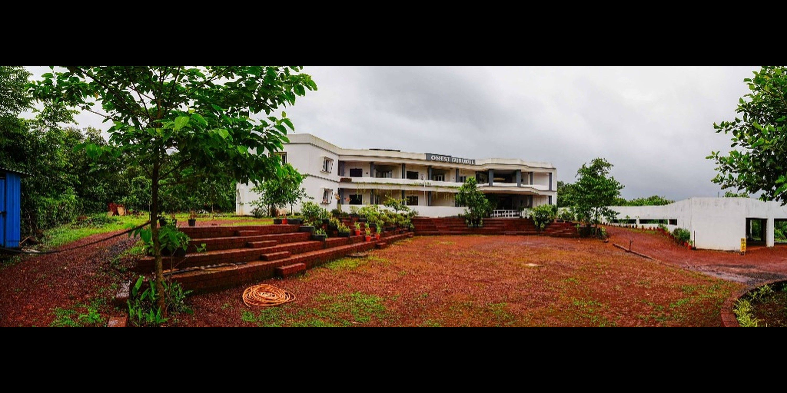
Academic Hub & Main Vista
Entrance amphitheater and main atrium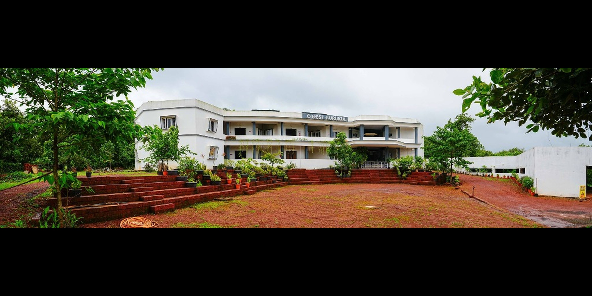
Courtyard & Tree Canopies
Central gathering lawn and native treesSpatial Design Insight: Open circular pavilions eliminate claustrophobic hallways, ensuring constant visual contact with sky, soil, and native greenery.
Shaped by Pure Konkan Air & Green Slopes
Located in Karwanchiwadi on the calm outskirts of Ratnagiri, our campus creates a natural sanctuary. Free from urban highway exhaust and industrial congestion, children spend their formative school years breathing fresh maritime breezes and resting their eyes on rolling greenery.
Natural Air Circulation & Low Decibels
No traffic noise; quiet acoustic surroundings encourage deep concentration and calm behavior.
Dedicated Perimeter Fencing & Monitored Access
Gated campus boundary with verified staff and single-point visitor entry control.
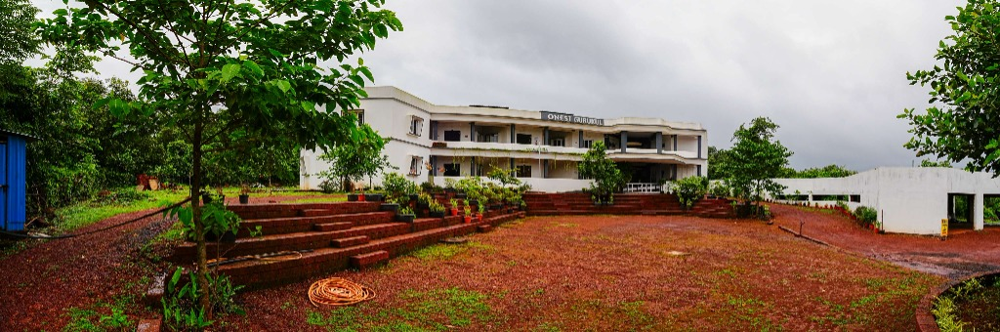
Spaces Designed for Deep Inquiry & Discovery
Every learning hall is oriented towards natural daylight, tactile experimentation, and quiet reading pods.

Spacious, Sunlit Gurukul Classrooms
Engineered with large windows that draw cool valley breezes across every desk. Ergonomic child-scale wooden furniture replaces rigid steel benches, allowing easy reconfiguration for debate circles, pair-work, or group projects.
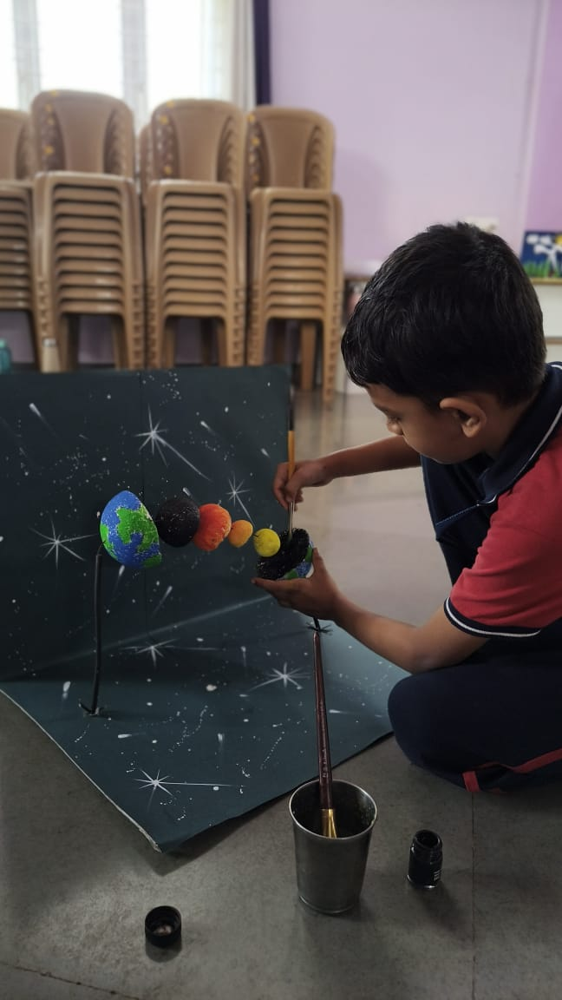
STEM & Science Discovery Hub
Equipped with microscopes, planetary models, and circuit components where science concepts are physically explored.
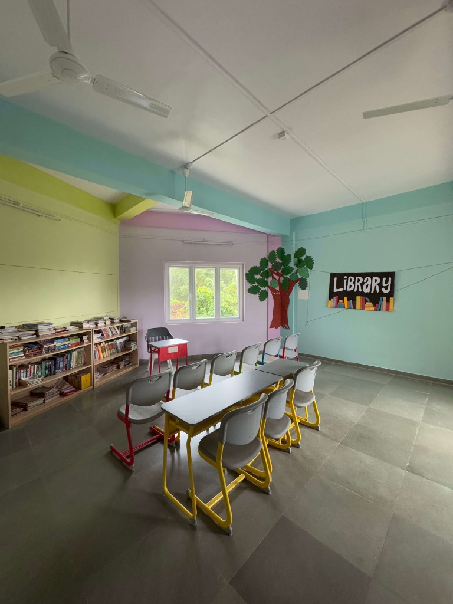
Children's Reading Library
Open low-stack shelves with Marathi and English literature, illustrated encyclopedias, and quiet reading alcoves.
Panoramic Observation Decks & Tree Amphitheaters
True education transcends enclosed walls. Our rooftop observation terraces and circular shaded lawns beneath mature neem trees host telescope nature sessions, poetry circles, shloka recitals, and environmental discussions.
Under the open sky, children learn that ideas are boundless, encouraging genuine inquiry and dialogue between students and teachers.
Outdoor Learning & Nature
Ratnagiri's morning air provides the ideal setting for open-air Pranayama, natural botany sketches, and sunrise assembly before indoor academic sessions begin.
Learning with Soil, Seeds & Living Canopy
At O'NEST Gurukul, environmental awareness is not memorized from a textbook—it is cultivated through direct daily stewardship.
Hands in the Soil: Organic Farming & Botany
In our student garden beds, children sow seeds, observe organic composting, and monitor plant growth without chemical fertilizers. They learn firsthand the patience required for food to grow and the value of caring for the soil.


A Tree Saved. A New Home on Campus.
During the Karwanchiwadi road-widening work, a banyan tree faced the risk of being cut down. The O'NEST school management intervened to protect it. Instead of allowing the tree to be felled, it was uprooted and replanted on the school campus, preserving the tree while allowing infrastructure development to proceed.
A small but meaningful step towards protecting nature while making room for progress.

Cultural Performing Arts & Martial Discipline
Physical vitality and cultural appreciation complement academic learning. Our campus provides dedicated arenas for traditional celebrations, stage expression, and martial arts.

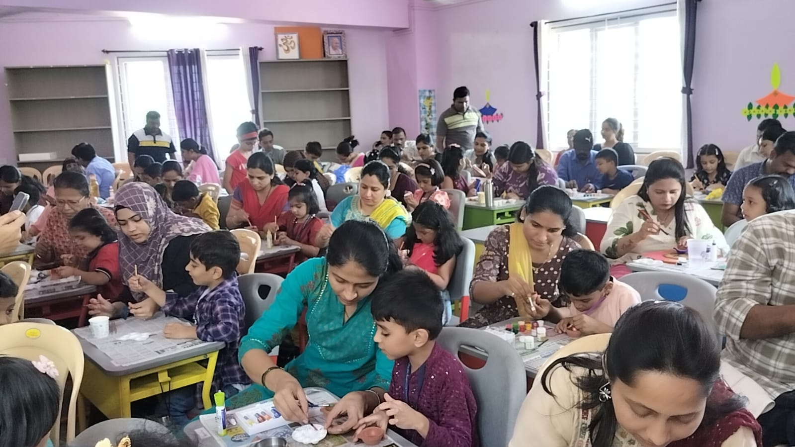
Cultural & Performing Arts Stage
Dedicated spaces for traditional Indian cultural events, classical dance, music, shloka recitations, and festival celebrations (such as Shiv Jayanti, Gurupurnima, and our Annual Gathering). Students develop poise, stage confidence, and a grounded appreciation of Indian heritage.


Karate Arena & Open Athletics Grounds
Martial arts training instills discipline, mental poise, and physical reflexes. Combined with open grounds for sports and running, students develop stamina, team coordination, and healthy habits under certified instructors.
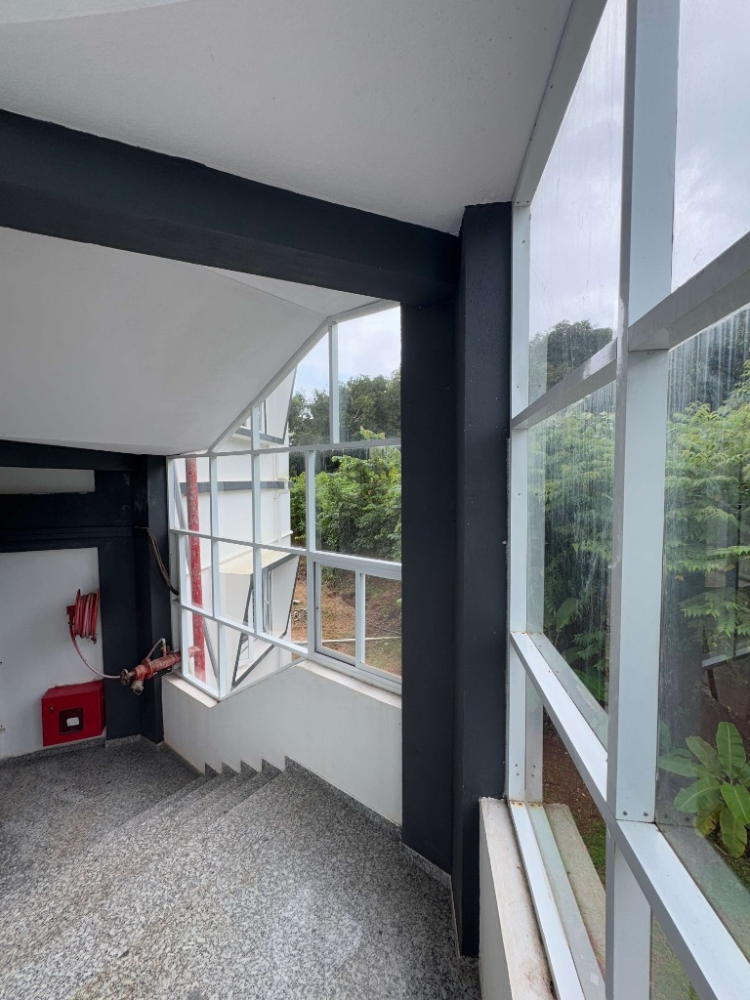
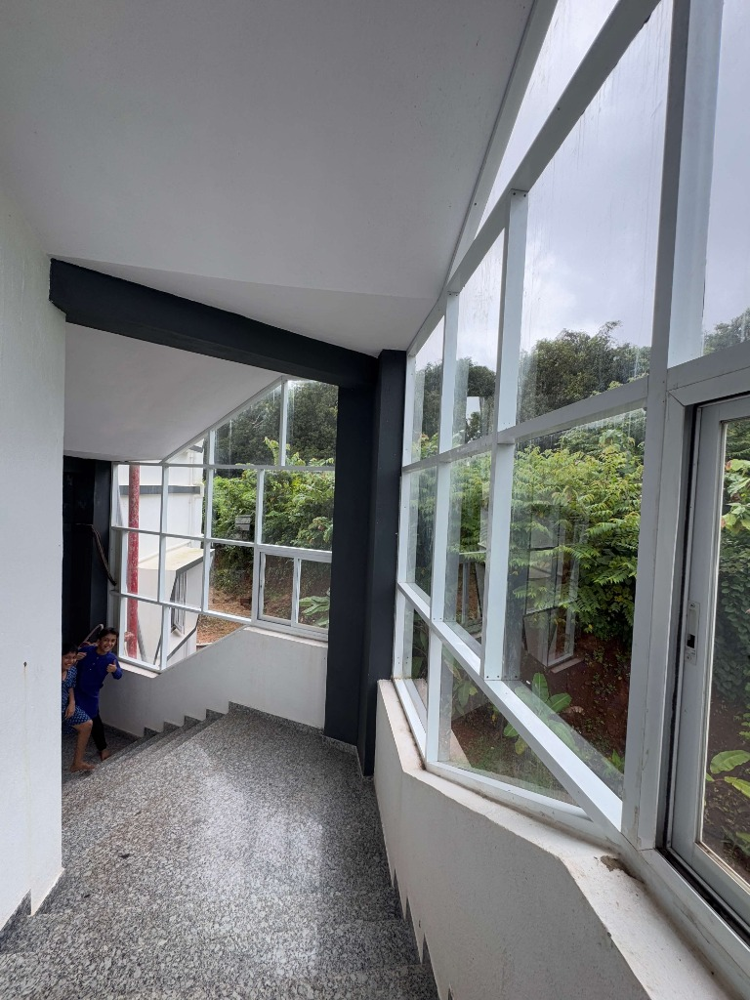
Sunlit Glass Stairwells & Open Galleries
Unlike typical schools where windowless corridors feel dark and stifling, our architectural glass stairwells bathe passages in natural daylight. As students move between subjects, they remain connected with Ratnagiri’s hills and tree canopies.
Child Safety Protocols & Healthy Utilities
Parents trust us with their children’s safety. We back that trust with practical safety drills, hygienic water, and attended first aid facilities.
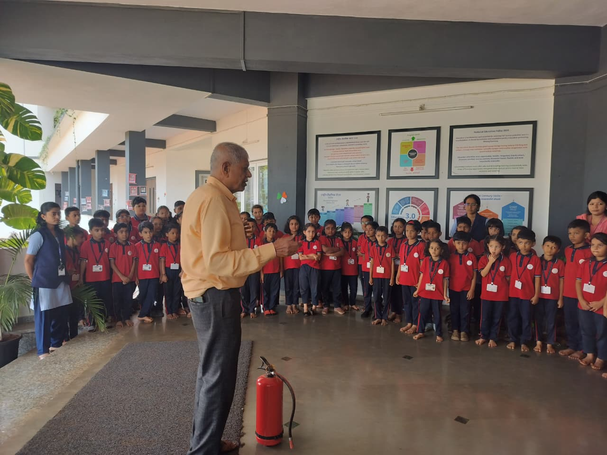
Verified Mock Fire Evacuation Drill
Students trained in calm evacuation and real fire safety precautions
RO Purified Drinking Water
Tested CleanCommercial-grade multi-stage Reverse Osmosis filtration units deliver safe, clean drinking water across all student floors.
Rooftop Solar PV Installation
Solar PoweredRooftop solar panels harness clean Konkan sunshine, supporting school energy needs with eco-friendly renewable power.
First Aid Medical Care & Hygiene Standards
AttendedAttended first aid room with pediatric supplies, tie-ups with nearby doctors, and child-height handwashing stations.
Moments Across O'NEST Gurukul
Click any photograph to view high-resolution details of daily learning and real school events.
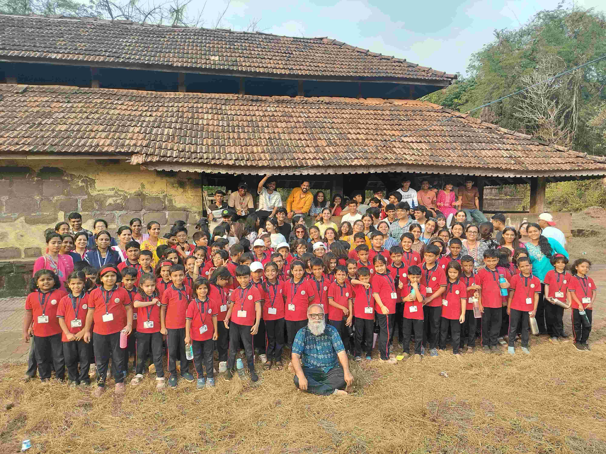
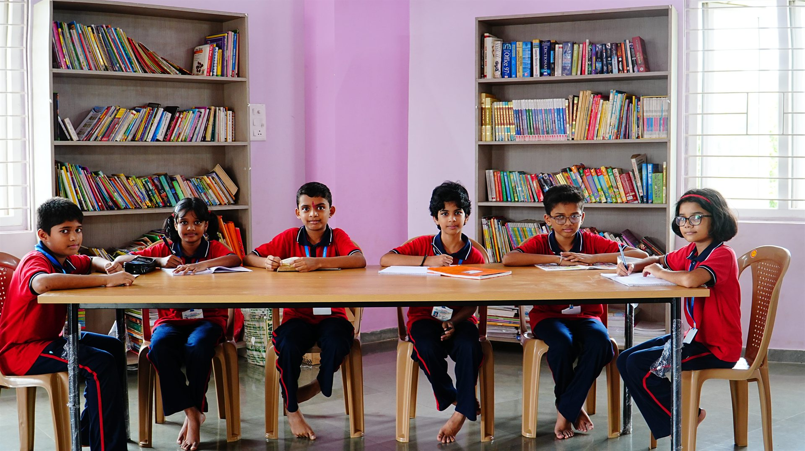


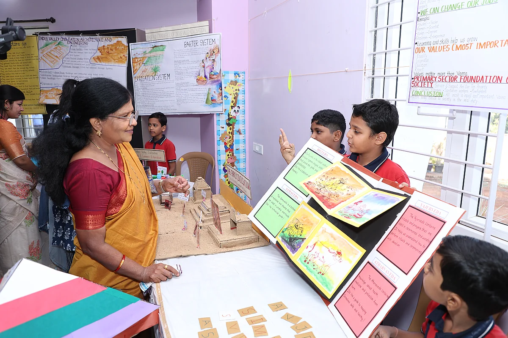
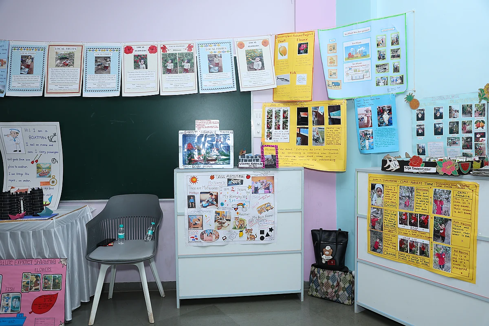
Frequently Asked Questions
Key details about visiting hours, student security, transport, and admissions.
Schedule Your Guided Campus Tour
Witness the joy, serenity, and inspiring Gurukul learning atmosphere of O'NEST Gurukul in Karwanchiwadi, Ratnagiri.